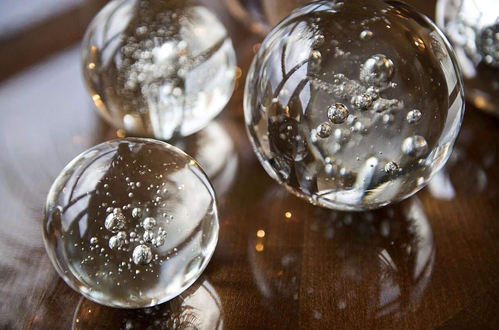
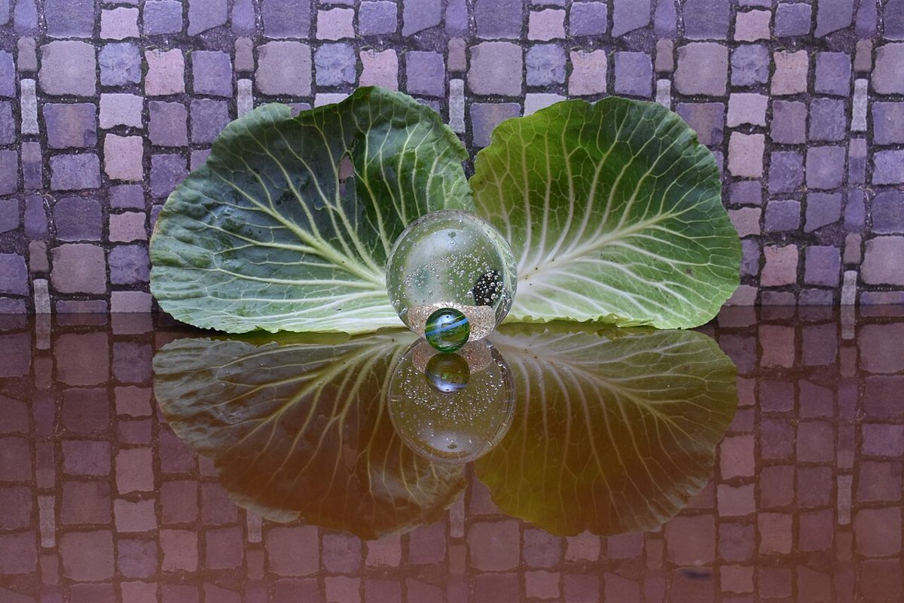

2V 丸屋根の見本帖
店のこと
お店について確認できているのは、所在地とInstagramのアカウントだけです。
このページの「想像してみる」部分は、制作側が想像して書いたものです。お店の実際の様子・考え・メニューとは関係がありません。
確認できていること
- 店名は「喫茶ドム」、業種はカフェ
- 所在地は鹿児島県出水市本町１１−２６(〒899-0205)
- 電話番号はなし。連絡はInstagramから
- 営業時間・定休日・メニュー・価格・ご予約・駐車場は準備中

想像してみる
「ドム」という名前から
由来は分かりません。制作側は、まるい形のものを思い浮かべました。半球の屋根、丸いパン、泡のふくらみ。形の連想だけで、お店の姿を示すものではありません。


